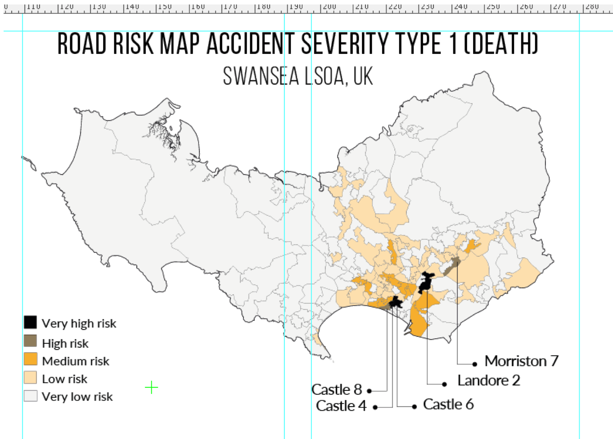
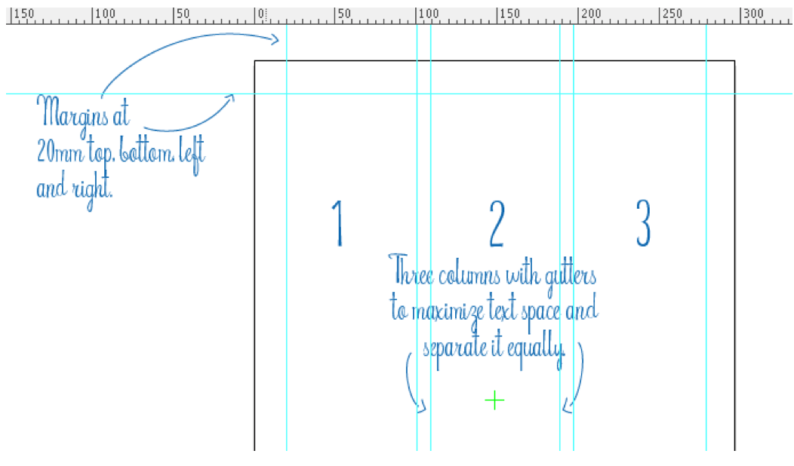
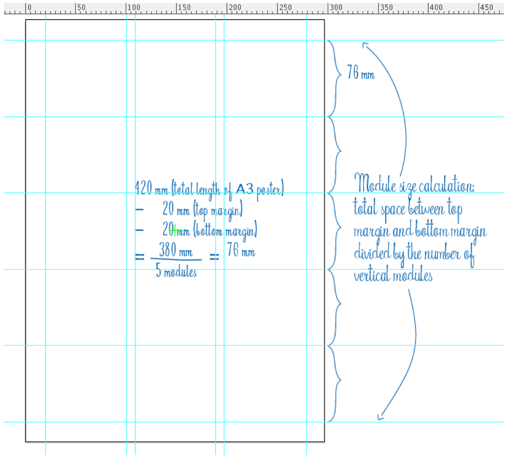
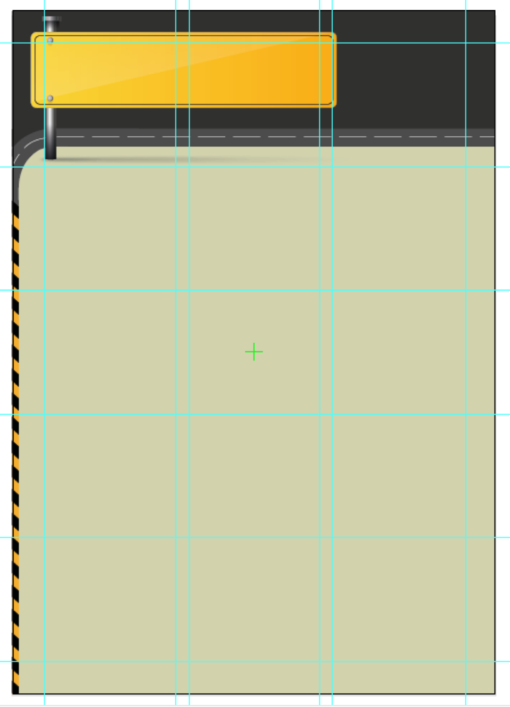
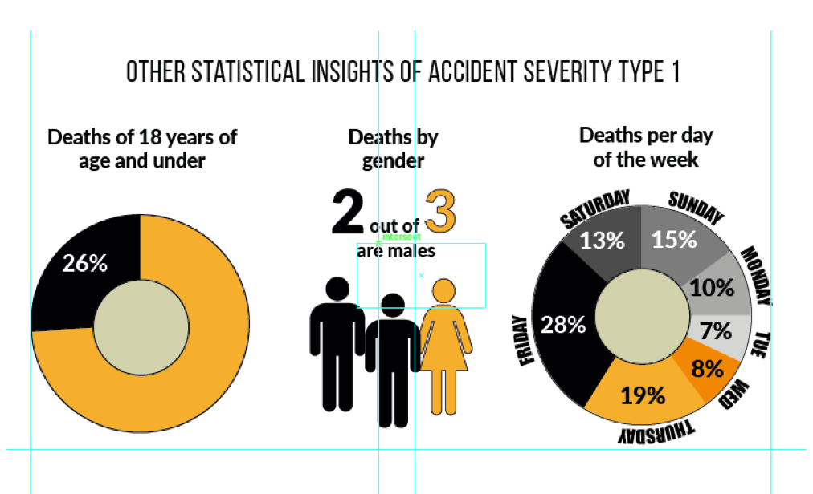
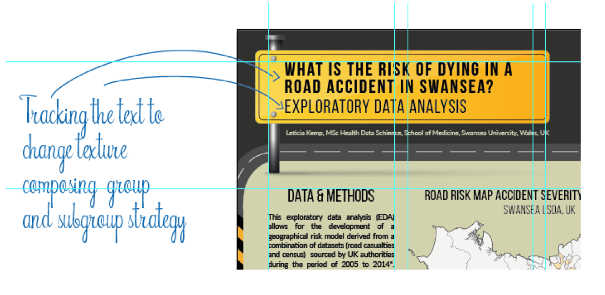
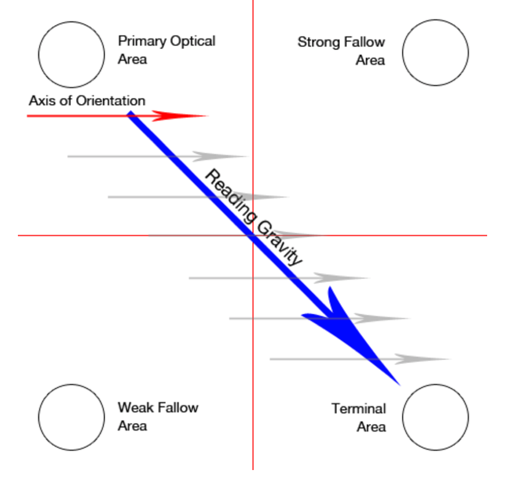
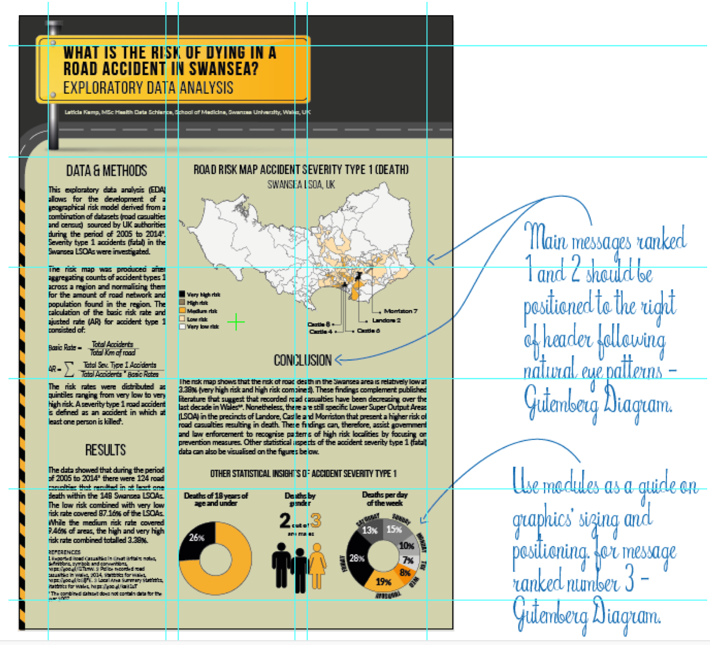

This page describes the visualisation design rationale of the academic conference poster created as part of an assignment for Data Visualisation.
The poster was produced to present an exploratory data analysis (EDA) showing a risk map after aggregating counts of accident of severity type 1 across Swansea and normalising them for the amount of road network found in the region of Swansea.
The following sections of this page discuss details of the design elements of the poster, including, storyline, layout, colour scheme and overall style of the poster. Data analysis methods are not discussed in this page. For the data analysis, see R as GIS page.
The map and other data analysis were done in RStudio, and the poster layout in Adobe Illustrator.
The communication of a facts, ideas or beliefs to an audience consists of the principal aim of a visual communication effort. The designer’s main role is to persuade the audience to adopt such information via a 2-dimentional object (Bennett, A. 2006). An integral part of this communication process was to firstly consider the type of audience that would be reading the poster.
As an example, a poster designed specifically for an academic conference will not be structurally developed or worded as a poster for a political candidate during a campaign. An audience for the latter will not expect to see scientific methods nor hypothesis and results in a poster.
At the conference environment, it’s very likely that all posters will be next to one another. This substantially increases competition for the reader’s attention and should be taken into consideration in the planning phase of the visualisation.
The poster narrative seems intrinsically simple; and since it is an academic poster, there are mandatory sections that need to be included. The storyline consisted of a main message, main conclusion; the presentation of a few secondary messages and finally, an explanation of how the messages were created. The poster would therefore reflect these as separate and yet complementary components, ranked from most prominent (1) to less prominent (4) content.
Main message: the “protagonist” of the poster. A prediction (risk) of an accident of severity type 1 (fatal) shown in a geographical map of Swansea, UK. How likely would it be for someone to die in a road accident in Swansea area? From the main message, the title of the poster was created: “What is the risk of dying in a road accident in Swansea?”
Main conclusion: after completing the exploratory data analysis, which areas in Swansea were found to be very dangerous, and which areas were found to be safe in the context of a possible fatal road accident? Did all Lower Super Output Areas (LSOAs) have the same probability of a fatal accident?
Secondary messages: additional insights extracted from the accident severity type 1 data during the discussed period of time.
Explanation: the methods utilized to calculate the rates of the map, the aggregation of the data per accident severity type 1 and the data itself.
One of the main strengths of a quantile map is its use of graduated colours to infer a scale of intensity. While the main message of the poster storyline was a quintile risk map, a proficient choice of colour scheme became significant in the process.
According to Maureen Stone (2006), “Color used well can enhance and clarify a presentation. Color used poorly will obscure, muddle and confuse.” The choice of a colour scheme for the poster was assisted by the reality of road signs. Research on road signs in the internet yielded black and yellow graphical themes.
Prior experience conveys that yellow’s readability is not always welcomed in digital mediums (i.e., screens). However, a poster with controlled output (print) would have the desired impact. Yellow is inherently considered a highlight colour, and very effective when used against black. Considering these colours are both already used by authorities to grab road user’s attention, their readability’s principle would also be applied to a poster about road safety. They would also help in seizing the attention of the audience. This is highly desirable, since it is believed that in an academic conference viewers devote only a few seconds for posters review.
The final four-colour palette was produced by an internet colour scheme generator (coolors.co). Yellow and black were chosen initially and the site suggested many other complementary colours. Grey and ‘sand’ were chosen to complete the palette below.
In order to visually integrate the map produced in R with the remainder of the document, the theme colours were applied to it. The natural characteristics of the colours were applied to match the message of the data. Black is a very strong and negative colour, so it was used to represent the very high risk areas in the region. Brown followed representing high risk with the same justification. As a much brighter and positive colour, but yet one that conveys “attention” in a road environment, yellow was used to show the high risk areas of the map. The subsequent risk classifications were denoted by a light shade of yellow until a near white colour, as shown on figure below.

Considering the poster’s final product was specified to be a colour-printed on an A3 size paper, exceptional attention to physical space and proportion of content should be one of the first aspects to be addressed. An effective and almost mandatory method of managing this feature is the creation of margins and layout grids. In graphic design, layout grids are seeing as the main pillars of design structure. Their main objective is to develop strong interrelationships between the typographic elements, giving text blocks images and space a rhythmical proportion (Elam, K. 2007), (Timothy, S. 2005).
Perception via eye movement, psychology of colours, groups and sizes are some of the many concepts that are subliminally encapsulated within these simple but very powerful grid structures. The next image demonstrates the margins, columns, gutters and grids on the poster.

The next image shows that the module size was the result of a calculation of the total space between the top martin and bottom margin divided by 5. The denominator 5 derived from the amount of vertical modules to be generated on the page, which can vary depending on the type of work.

Drawing from the internet research on road signs, a few free vector graphic elements were found on www.freepick.com. By piecing elements together as a header, a road theme was created. This phase of the creative process was aimed at providing a stronger relationship between the data analysis work and the reality of road accidents. The use of recognisable black and yellow road sign elements were applied as a potential to attract attention from the audience, while keeping the overall composition within the harmonious colour palette assigned previously.

Infographics are graphic visual representation of data. They are used to present information in a concise manner by leveraging of human visual system’s ability to see patterns and trends. Infographics have been utilised in different ways for many years, however recently their use has proliferated in the fields of business intelligence and marketing. This has been further fuelled by the rise of digital and social media marketing as well as data centric organisations (Lankow, J., Ritchie J. et al., 2012).
The quantile classification method of calculation of the Swansea map rapidly conveys the amount of risk of each individual precinct at a glance, therefore, they can also be classified as infographics. As seen at the start of this page, the map is organised in an already familiar geographical format and it presents a much more effective way of transmitting the information as opposed to a table with numbers format.
There were other relevant statistical aspects about road severity type 1 data that were uncovered by this EDA. The next image shows 3 infographic elements showing death accidents information of young people, gender and week day respectively.

Typographic hierarchy methods were applied to the poster in order to visually communicate order and importance. Choosing distinct typefaces for the different hierarchies enhance the method’s composition. For the title, a heavy typeface in larger size transmitted the importance of first order. For heading and body text, two different but complementary typefaces are visually implying their hierarchy. Tracking the text of both title and subtitle also created changes in texture and tone. This is known as the group and subgroup strategy, and it has been applied throughout the poster (Elam, K. 2007).

Text and graphs were placed on the poster leveraging the organized structure of the grid. Their sizes were carefully adjusted several times until the rhythm and flow of information reached an optimal level. One of minimal effort for visual appeal and understanding by the viewer.
The Gutemberg Diagram predicts that there is a general pattern followed by the eyes when looking at evenly distributed information (Lidwell, W., Holden, K., et al 2003). The eyes of a viewer (from the western parts of the world) naturally starts looking from top left to bottom right direction as per diagram below.

Following Gutemberg Diagram’s pattern, the previously ranked components of the Storyline section are placed in the poster. Main message (risk map) was placed to the right of the title, towards the center of the page following Gutemberg’s reading gravity direction. Main conclusion (conclusion), placed as 2nd on Storyline also followed the pattern. Ranked 3rd on Storyline was secondary messages, which was also placed on a smaller but “prime real-estate” according to Gutemberg Diagram.

Bennett, A. (2006) Design Studies: Theory and Research in Graphic Design. Princeton Architectural Press. New York, United States. ISBN: 9781568985862.
Elam, K. (2007) Typographic Systems. Princeton Architectural Press. New York, United States. ISBN: 9781568986876.
Lankow, J., Ritchie J., Crooks, R. (2012). Transform your marketing efforts through the power of visual content. John Wiley & Sons. Hoboken, United States. ISBN: 9781118421598.
Lidwell, W., Holden, K., Butler J. (2003) Universal Principles of Design. Rockport Publishers, Inc., Beverly, United States. ISBN: 1592530079.
Timothy, S. (2005). Making and Breaking the Grid: A Layout Design Workshop. Rockport Publishers Inc., Gloucester, United States ISBN: 9781592531257.
Stone, M. (2006). Choosing colors for data visualisazation. Eurographics Conference on Visualization (EuroVis). Business Intelligence Network.